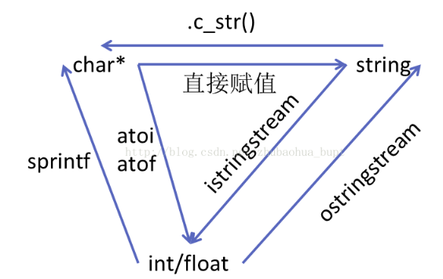
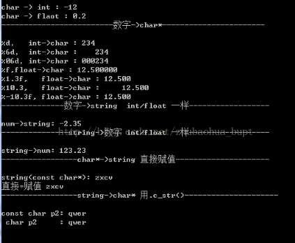

☰ 目录
20180729int string 和char数组之间的转换

#include<iostream>
#include<string>
#include<sstream>
#pragma warning(disable:4996)
using namespace std;
int main()
{
cout << "-------------------------char*->数字------------------------"<<endl << endl;
char a[] = {'-','1','2',',','3'};
int num1 = atoi(a);
cout << "char -> int : " << num1 << endl;
char a1[] = { '.','2' };
float num2 =atof(a1);
cout << "char -> flaot : " << num2 << endl;
cout << "-------------------------数字->char*-----------------------" << endl << endl;
int num3 = +234;
char c1[40];
sprintf(c1,"%d",num3);//按正常位数转换
cout << "%d， int->char : " <<c1<< endl;
sprintf(c1, "%6d", num3);//指定6位，不足左边补空格
cout << "%6d， int->char : " << c1<< endl;
sprintf(c1, "%06d", num3);//指定6位，不足左边补0
cout << "%06d，int->char : " << c1 << endl;
float num4 = 12.5;
char c2[40];
sprintf(c2, "%f", num4);//按num4实际情况转换
cout << "%f,float->char : " << c2<< endl;
//%m.nf m代表c2打印总宽度，n代表保留的小数位
// if(m<=c2保留指定小数位后的总长度)，m不起作用，
//else 输出m位，默认右对齐，不足位补空格
sprintf(c2, "%1.3f", num4);
cout << "%1.3f, float->char : " << c2 << endl;
sprintf(c2, "%10.3f", num4);
cout << "%10.3, float->char : " << c2 << endl;
sprintf(c2, "%-10.3f", num4);//加‘-’表示右对齐
cout << "%-10.3f, float->char : " << c2 << endl;
cout << "--------------数字->string int/float 一样------------------" << endl << endl;
float num5 = -2.35;
ostringstream ss;
ss << num5;
string s1 = ss.str();
cout << "num->string: " << s1 << endl;
cout << "---------------string->数字 int/float 一样------------------" << endl << endl;
istringstream iss("123.23");
float num6;
iss>>num6 ;
cout << "string->num: " << num6 << endl;
cout << "-----------------char*->string 直接赋值---------------------" << endl << endl;
char *p1 = "zxcv";
string s2(p1);
cout << "string(const char*): " << s2 << endl;
string s3;
s3 = p1;
cout << "直接=赋值 " << s3 << endl;
cout << "-----------------string->char* 用.c_str()---------------------" << endl << endl;
string s4 = "qwer";
const char *p2 = s4.c_str();
cout << "const char p2: " << p2 << endl;
char *p3 = (char*)s4.c_str();
cout << " char p2 : " << p3 << endl;
system("pause");
}
